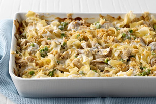

Home

Description
What do we do when the freezer is empty but we've got allllllll this tuna?
Serves 6
Prep: 15 minutes
Cook: 18 minutes
Total: 33 minutes
Ingredients
- 3 cups egg noodles
- 1 tbsp butter
- 1 small onion
- 2 stalks celery(diced)
- 2/3 cup frozen peas
- 1 can tuna
- 10 1/2oz cream of mushroom soup
- 1/3 cup milk
- 1 cup cheddar cheese
- 1 tbsp parsley
Crumb Topping
- 1/2 cup bread crumbs
- 1 tbsp butter
- 1/2 cup cheddar
- 1 tbsp parsley
Directions
- Preheat oven to 425 degrees F. Combine topping ingredients and set aside.
- Boil noodles al dente. Drain and rinse.
- Cook onion and celery in butter until tender, about 5-7 minutes.
- In a large bowl, combine noodles, onion mixture, peas, soup, milk, cheese, tuna and parsley. Mix well.
- Spread into a 2qt casserole dish and top with crumb topping
- Bake 18-20 minutes or until bubbly.
Back to Top